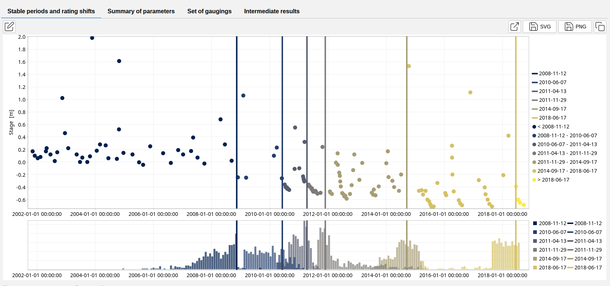
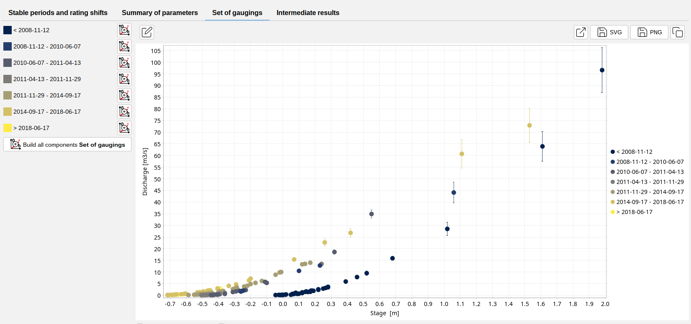

Rating Curves Shifts
In the practical world, rating curves are not static due to changes in the hydraulic configuration and parameters of the controls. These changes can be due to various causes such as sediment deposits, debris-jams, floods, etc.
It is important to consider them and detect them, this can be done through an assessment of the gauging data through the years and finding the times at which the rating curves shift.
As of BaRatinAGE 3.2, the ability to detect the rating curve shifts is implemented. In order to use the functionality, a rating shift detector needs to be created in your project:
- via the menu Components…Create a rating shift detector;
- by right-clicking on tools and then on
 Rating Shift Detector node in the Component Explorer tree;
Rating Shift Detector node in the Component Explorer tree; - by clicking on the button in the toolbar.
You will be able to rename this new rating shift detector and enter a description. An existing rating shift detector can be duplicated or deleted.
The properties of the rating shift detector are then specified by selecting :
- A hydraulic configuration;
- A set of gaugings.
You are now ready to start calculating the rating shifts, by clicking on the Launch the rating shift detections button. At the end of the calculation, the panel is updated as follows:

The dots are the stages (or discharges) of the gaugings through time. The vertical lines indicate the time at which a rating shift likely occurred. They are defined as the MaxPost values of the posterior distributions of the rating shift times, that are displayed as bar graphs.
Under the section set of gauging, different period of the gaugings set can be found, with their period indicated in the left hand side. The gaugings of the different periods can be exported to the set of gaugings component menu through the use of the button Build all components Set of Gaugings. This enables rating curves to be calculated for each period, using their respective set of gauging.

The Summary of parameters tab lists the MaxPost times for the rating shifts as well as the 95% probability interval limits. The Intermediate results tab presents the results obtained at each iteration of the process of segmenting the differences between the discharges of the gaugings and the discharges of the rating curve established for each period.Notes on the methodology:
The methodology used to calculate rating shifts is described in Darienzo et al. (2021) and was initially implemented in the R package RatingShiftHappens developed by Felipe MENDEZ and Ben RENARD (INRAE, RiverLy and RECOVER). The goal of the package is to create a tool for detecting, visualizing and estimating rating shifts. It was derived from BayDERS developed by M. Darienzo et al.(2021).
Please note that this tool does not necessarily detect all rating shifts, nor does it precisely identify the date of rating shifts (it simply separates series of gaugings, which you can then use to calculate independent rating curves). It can help identify rating shifts, but also merge validity periods in re-analysis if no significant rating shifts are ultimately found. Please feel free to give us feedback on the relevance of the results at your test stations.